本篇将基于 etcd 服务发现，介绍如何实现 gRPC 客户端负载均衡。
gRPC 负载均衡的三种方案
gRPC 官方文档提供了关于 gRPC 负载均衡的方案（Load Balancing in gRPC），此方案是为 gRPC 设计的，下面我们对此进行分析。
1. 集中式负载均衡（Proxy 方案）
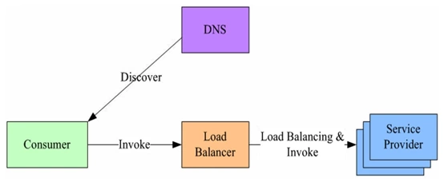
在服务消费者和服务提供者之间有一个独立的负载均衡（LB），通常是专门的硬件设备如 F5，或者基于软件如 LVS、HAproxy 等实现。LB 上有所有服务的地址映射表，通常由运维配置注册。当服务消费方调用某个目标服务时，它向 LB 发起请求，由 LB 以某种策略（比如轮询 Round-Robin）做负载均衡后将请求转发到目标服务。LB 一般具备健康检查能力，能自动摘除不健康的服务实例。
该方案主要问题：服务消费方、提供方之间增加了一级，有一定性能开销，请求量大时，效率较低。
可能有读者会认为集中式负载均衡存在这样的问题：一旦负载均衡服务挂掉，那整个系统将不能使用。解决方案：可以对负载均衡服务进行 DNS 负载均衡，通过对一个域名设置多个 IP 地址，每次 DNS 解析时轮询返回负载均衡服务地址，从而实现简单的 DNS 负载均衡。
2. 进程内负载均衡（客户端负载均衡方案）
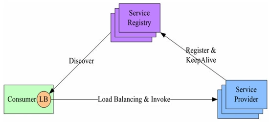
针对第一个方案的不足，此方案将 LB 的功能集成到服务消费方进程里，也被称为软负载或者客户端负载方案。服务提供方启动时，首先将服务地址注册到服务注册表，同时定期报心跳到服务注册表以表明服务的存活状态，相当于健康检查。服务消费方要访问某个服务时，它通过内置的 LB 组件向服务注册表查询，同时缓存并定期刷新目标服务地址列表，然后以某种负载均衡策略选择一个目标服务地址，最后向目标服务发起请求。
LB 和服务发现能力被分散到每一个服务消费者的进程内部，同时服务消费方和服务提供方之间是直接调用，没有额外开销，性能比较好。
该方案主要问题：要用多种语言、多个版本的客户端编写和维护负载均衡策略，使客户端的代码大大复杂化。
3. 独立 LB 进程方案
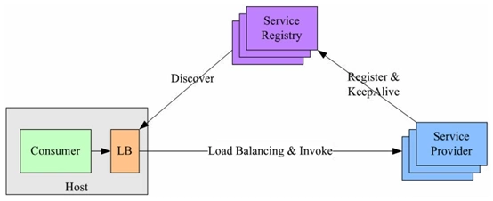
该方案是针对第二种方案的不足而提出的一种折中方案，原理和第二种方案基本类似。不同之处是将 LB 和服务发现功能从进程内移出来，变成主机上的一个独立进程。主机上的一个或者多个服务要访问目标服务时，它们都通过同一主机上的独立 LB 进程做服务发现和负载均衡。该方案也是一种分布式方案，没有单点问题；服务调用方和 LB 之间是进程内调用，性能好；同时该方案还简化了服务调用方，不需要为不同语言开发客户端库。
本篇将介绍第二种负载均衡方法——客户端负载均衡。
实现 gRPC 客户端负载均衡
gRPC 已提供了简单的负载均衡策略（如 Round Robin），我们只需实现它提供的 Builder 和 Resolver 接口，就能完成 gRPC 客户端负载均衡。
Builder 与 Resolver 接口
type Builder interface {
Build(target Target, cc ClientConn, opts BuildOption) (Resolver, error)
Scheme() string
}Builder 接口：创建一个 resolver（本文称之服务发现），用于监视名称解析更新。
Build方法：为给定目标创建一个新的 resolver，当调用grpc.Dial()时执行。Scheme方法：返回此 resolver 支持的方案。
type Resolver interface {
ResolveNow(ResolveNowOption)
Close()
}Resolver 接口：监视指定目标的更新，包括地址更新和服务配置更新。
ResolveNow方法：被 gRPC 调用，以尝试再次解析目标名称。只用于提示，可忽略该方法。Close方法：关闭 resolver。
根据以上两个接口，我们把服务发现的功能写在 Build 方法中，把获取到的负载均衡服务地址返回到客户端，并监视服务更新情况，以修改客户端连接。
服务发现：discovery.go
修改服务发现代码 discovery.go：
package etcdv3
import (
"context"
"log"
"sync"
"time"
"github.com/coreos/etcd/mvcc/mvccpb"
"go.etcd.io/etcd/clientv3"
"google.golang.org/grpc/resolver"
)
const schema = "grpclb"
//ServiceDiscovery 服务发现
type ServiceDiscovery struct {
cli *clientv3.Client //etcd client
cc resolver.ClientConn
serverList map[string]resolver.Address //服务列表
lock sync.Mutex
}
//NewServiceDiscovery 新建发现服务
func NewServiceDiscovery(endpoints []string) resolver.Builder {
cli, err := clientv3.New(clientv3.Config{
Endpoints: endpoints,
DialTimeout: 5 * time.Second,
})
if err != nil {
log.Fatal(err)
}
return &ServiceDiscovery{
cli: cli,
}
}
//Build 为给定目标创建一个新的`resolver`，当调用`grpc.Dial()`时执行
func (s *ServiceDiscovery) Build(target resolver.Target, cc resolver.ClientConn, opts resolver.BuildOption) (resolver.Resolver, error) {
log.Println("Build")
s.cc = cc
s.serverList = make(map[string]resolver.Address)
prefix := "/" + target.Scheme + "/" + target.Endpoint + "/"
//根据前缀获取现有的key
resp, err := s.cli.Get(context.Background(), prefix, clientv3.WithPrefix())
if err != nil {
return nil, err
}
for _, ev := range resp.Kvs {
s.SetServiceList(string(ev.Key), string(ev.Value))
}
s.cc.NewAddress(s.getServices())
//监视前缀，修改变更的server
go s.watcher(prefix)
return s, nil
}
// ResolveNow 监视目标更新
func (s *ServiceDiscovery) ResolveNow(rn resolver.ResolveNowOption) {
log.Println("ResolveNow")
}
//Scheme return schema
func (s *ServiceDiscovery) Scheme() string {
return schema
}
//Close 关闭
func (s *ServiceDiscovery) Close() {
log.Println("Close")
s.cli.Close()
}
//watcher 监听前缀
func (s *ServiceDiscovery) watcher(prefix string) {
rch := s.cli.Watch(context.Background(), prefix, clientv3.WithPrefix())
log.Printf("watching prefix:%s now...", prefix)
for wresp := range rch {
for _, ev := range wresp.Events {
switch ev.Type {
case mvccpb.PUT: //新增或修改
s.SetServiceList(string(ev.Kv.Key), string(ev.Kv.Value))
case mvccpb.DELETE: //删除
s.DelServiceList(string(ev.Kv.Key))
}
}
}
}
//SetServiceList 新增服务地址
func (s *ServiceDiscovery) SetServiceList(key, val string) {
s.lock.Lock()
defer s.lock.Unlock()
s.serverList[key] = resolver.Address{Addr: val}
s.cc.NewAddress(s.getServices())
log.Println("put key :", key, "val:", val)
}
//DelServiceList 删除服务地址
func (s *ServiceDiscovery) DelServiceList(key string) {
s.lock.Lock()
defer s.lock.Unlock()
delete(s.serverList, key)
s.cc.NewAddress(s.getServices())
log.Println("del key:", key)
}
//GetServices 获取服务地址
func (s *ServiceDiscovery) getServices() []resolver.Address {
addrs := make([]resolver.Address, 0, len(s.serverList))
for _, v := range s.serverList {
addrs = append(addrs, v)
}
return addrs
}服务注册：register.go
服务注册主要修改 key 的存储格式，register.go：
package etcdv3
import (
"context"
"log"
"time"
"go.etcd.io/etcd/clientv3"
)
//ServiceRegister 创建租约注册服务
type ServiceRegister struct {
cli *clientv3.Client //etcd client
leaseID clientv3.LeaseID //租约ID
//租约keepalive响应chan
keepAliveChan <-chan *clientv3.LeaseKeepAliveResponse
key string //key
val string //value
}
//NewServiceRegister 新建注册服务
func NewServiceRegister(endpoints []string, serName, addr string, lease int64) (*ServiceRegister, error) {
cli, err := clientv3.New(clientv3.Config{
Endpoints: endpoints,
DialTimeout: 5 * time.Second,
})
if err != nil {
log.Fatal(err)
}
ser := &ServiceRegister{
cli: cli,
key: "/" + schema + "/" + serName + "/" + addr,
val: addr,
}
//申请租约设置时间keepalive
if err := ser.putKeyWithLease(lease); err != nil {
return nil, err
}
return ser, nil
}
//设置租约
func (s *ServiceRegister) putKeyWithLease(lease int64) error {
//设置租约时间
resp, err := s.cli.Grant(context.Background(), lease)
if err != nil {
return err
}
//注册服务并绑定租约
_, err = s.cli.Put(context.Background(), s.key, s.val, clientv3.WithLease(resp.ID))
if err != nil {
return err
}
//设置续租 定期发送需求请求
leaseRespChan, err := s.cli.KeepAlive(context.Background(), resp.ID)
if err != nil {
return err
}
s.leaseID = resp.ID
s.keepAliveChan = leaseRespChan
log.Printf("Put key:%s val:%s success!", s.key, s.val)
return nil
}
//ListenLeaseRespChan 监听 续租情况
func (s *ServiceRegister) ListenLeaseRespChan() {
for leaseKeepResp := range s.keepAliveChan {
log.Println("续约成功", leaseKeepResp)
}
log.Println("关闭续租")
}
// Close 注销服务
func (s *ServiceRegister) Close() error {
//撤销租约
if _, err := s.cli.Revoke(context.Background(), s.leaseID); err != nil {
return err
}
log.Println("撤销租约")
return s.cli.Close()
}客户端：注册 Resolver 并启用 round_robin
客户端修改 gRPC 连接服务的部分代码即可：
func main() {
r := etcdv3.NewServiceDiscovery(EtcdEndpoints)
resolver.Register(r)
// 连接服务器
conn, err := grpc.Dial(r.Scheme()+"://8.8.8.8/simple_grpc", grpc.WithBalancerName("round_robin"), grpc.WithInsecure())
if err != nil {
log.Fatalf("net.Connect err: %v", err)
}
defer conn.Close()
// 建立gRPC连接
grpcClient = pb.NewSimpleClient(conn)
}gRPC 内置了简单的负载均衡策略 round_robin，根据负载均衡地址，以轮询的方式进行调用服务。
服务端：启动时把服务注册到 etcd
服务端启动时，把服务地址注册到 etcd 中即可：
func main() {
// 监听本地端口
listener, err := net.Listen(Network, Address)
if err != nil {
log.Fatalf("net.Listen err: %v", err)
}
log.Println(Address + " net.Listing...")
// 新建gRPC服务器实例
grpcServer := grpc.NewServer()
// 在gRPC服务器注册我们的服务
pb.RegisterSimpleServer(grpcServer, &SimpleService{})
//把服务注册到etcd
ser, err := etcdv3.NewServiceRegister(EtcdEndpoints, SerName, Address, 5)
if err != nil {
log.Fatalf("register service err: %v", err)
}
defer ser.Close()
//通过服务器 Serve() 方法监听该端口，阻塞等待直到进程被杀死或者 Stop() 被调用
err = grpcServer.Serve(listener)
if err != nil {
log.Fatalf("grpcServer.Serve err: %v", err)
}
}运行效果
我们先启动并注册三个服务：
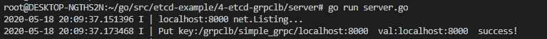
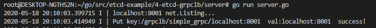
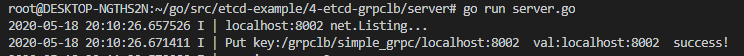
然后客户端进行调用：
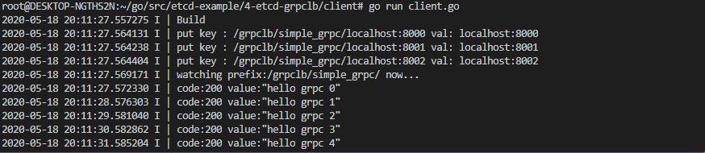
看服务端接收到的请求：
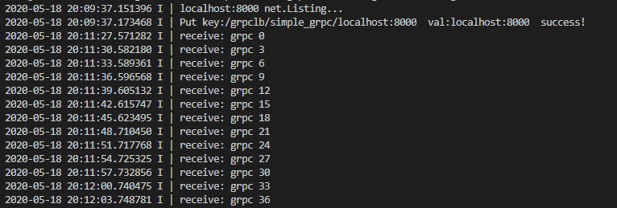
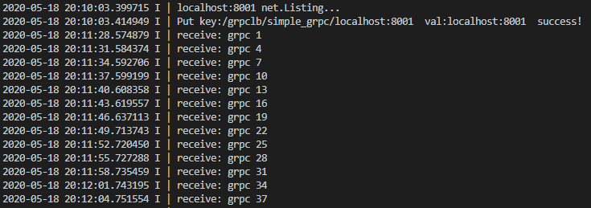
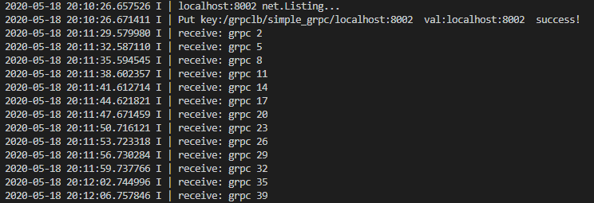
关闭 localhost:8000 服务，剩余 localhost:8001 和 localhost:8002 服务接收请求：
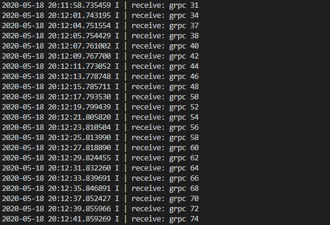
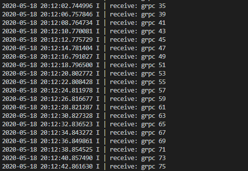
重新打开 localhost:8000 服务：
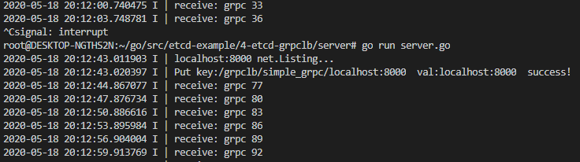
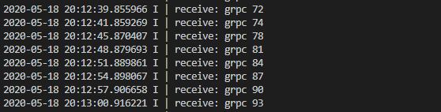
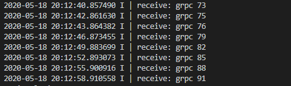
可以看到，gRPC 客户端负载均衡运行良好。
总结
本文介绍了 gRPC 客户端负载均衡的实现，它简单实现了 gRPC 负载均衡的功能。但在对接其他语言时候比较麻烦，需要每种语言都实现一套服务发现和负载策略。
目前官方只提供了取第一个地址 pick_first 和轮询 round_robin 两种负载均衡策略。